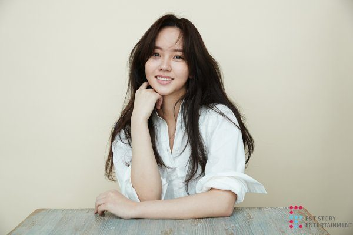

Kim So-hyun (Korean: 김소현; Hanja: 金所泫; born June 4, 1999) is a South Korean actress[1] who began her career as a child actress in 2006 and initially gained public attention for playing a villainous young queen-to-be in Moon Embracing the Sun (2012) and a girl who falls into tragedy in Missing You (2013).
She took on her first leading role in teen drama Who Are You: School 2015 (2015) and since then, has starred in musical Page Turner (2016), historical melodrama The Emperor: Owner of the Mask (2017), romantic comedy Radio Romance (2018) and television dramas based on Naver Webtoon's Hey Ghost, Let's Fight (2016), Love Alarm (2019) and The Tale of Nokdu (2019). She was the regular host of MBC's music program Music Core and survival reality show Under Nineteen in 2019.
Name: Kim So-Hyun
Hangul: 김소현
Born: June 4, 1999
Birthplace: Australia
Twitter: @hellokimsohyun
Kim So-Hyun was born in Australia. In 2003, when Kim So-Hyun was 5-years-old, she moved with her family to South Korea.
Bread, Love and Dreams | Jeppangwang Kim Tak Goo (KBS2 / 2010) - Koo Ja-Rim (young)
Guardian: The Lonely and Great God | Dokkaebi (tvN / 2016-2017) - Queen (special appearance)
Who Are You: School 2015 | Hooayoo- Hakgyo 2015 (KBS2 / 2015) - Lee Eun-Bi / Ko Eun-Byeol
Bring it on, Ghost | Ssawooja Gwishina (tvN / 2016) - Kim Hyun-Ji
While You Were Sleeping | Dangshini Jamdeun Saie (SBS / 2017) - Park So-Yoon (cameo)
Radio Romance (KBS2 / 2018) - Song Geu-Rim
Love Alarm | Joahamyun Woolrineun (Netflix / 2019) - Kim Jo-Jo
Unforgettable | Soonjung (2016) - Soo-Ok Movie